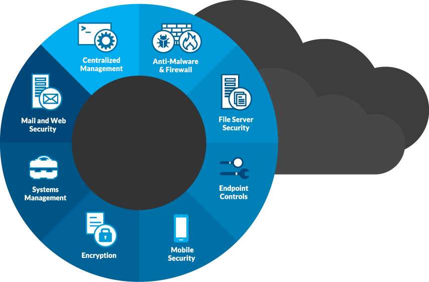

Security
Assess Vulnerabilities | Protect Infrastructure
We’re experts in our industry so you can be leaders in yours
Security Assessments
Establish a baseline to determine your security posture and develop policy and procedures that will better protect your business systems and data.
Learn More
Threat Management
L3’s Threat Management service guards your infrastructure by identifying suspicious activities and remediating perceived threats with rapid response.
Learn More
End Point Security
Mitigating threats requires constant coverage of end point devices. L3’s solution protects your IT infrastructure by ensuring risks are instantly remediated.
Learn More
Vulnerability Assessments
L3 offers best practices for finding your security gaps through vulnerability scanning, penetration testing, and risk analysis routines.
Learn More
Security Assessments
With L3 as an independent partner, assessing your current security framework can help your organization validate its IT security posture, improve policies and procedures, and better educate employees on how to protect company data and meet regulatory compliance demands so that you’re better able to reach your goals.

IT Focused Risk Assessment
Identify event vulnerabilities and threats that could adversely affect your organization by conducting an annual risk assessment. L3 examines all aspects of your infrastructure and information from an independent, unbiased perspective and provides a formal written assessment so that you’re aware of the gaps that exist and can make the appropriate business decisions.
Comprehensive Gap Analysis
L3 views Gap Analysis as an extension of Risk Assessment. Being aware of the elements that have led to gaps in your security posture is vital to determining what initiatives and investments should be made to update and strengthen your organization’s IT. L3 Networks has the technology and operational skillsets in place to help clients undertake this process.
Customized Development of Policies and Procedures
Comprehensive policies and procedures that govern the secure management of information are vital to all organizations. Finding the time and resources to accomplish this is often overwhelming to businesses. L3 can design a customized set of documentation that satisfies compliancy regulation for PCI DSS, HIPAA, ISO 27001 & NIST/FISMA.

Threat Management
Protecting your Infrastructure relies on having the right software tools and expertise on hand to manage those tools 24/7. But having that level of support ‘in house’ may not be a viable option for your organization. L3 offers 24/7 threat management services that provide clients with a global view of their security situation day or night without the massive investment of multiple solutions and additional IT staff.

Detect and Respond
L3’s suite of security tools protects your data and keeps your business operating normally. With L3 in place as an extension to your own IT team, you get the added protection of 24/7 responders who take action immediately to remediate problems in real time.
Expert Security Help
Our security experts are available to provide remediation help as well as deliver best practice recommendations and guidance so that as your businesses develops and grows, security is always a topic of consideration when projects and changes are reviewed.
Security delivered ‘as a service’
L3’s flexible cost model allows businesses to rapidly deploy security solutions “as a service,” which is a cost-effective way to scale security up or down as needed with little or no capital expenditures. Plus, L3 utilizes the latest software and offers 24/7 service.
Pay as you go cost model
For businesses that prefer the predictable nature of a fixed monthly rate, L3 Networks offers a fixed cost model to deliver a suite of security services, which includes the most up-to-date software and 24/7 remediation support to ensure your network is protected.
The L3 Security Approach Provides Better Security Outcomes

Designed for Any Environment
L3’s security solutions offer the flexibility to support all site infrastructures and datacenters whether you use our private cloud, the public cloud, or a hybrid environment. Each comes with the ease of single console management.
Threat Signatures & Rules
Our security solutions utilize a 52,000+ IDS Signature database where new signatures are added weekly as well as a consolidation rules set from multiple sources, real time signature updates, and customer rule creation and editing.

Analysis & Reporting
Be assured that your data is being optimally protected. L3’s backup management protocol comes with audit-ready monthly and weekly scheduled reporting that’s compatible across all environments, and includes priority incident reports.
End Point Security
Most security vulnerabilities are exploited through Endpoint Devices, namely workstations, laptops, smartphones and tablets. Mitigating this risk requires continuous monitoring and a level of attention that many IT department are not equipped to manage. L3’s End Point Security service provides an easy to deploy solution that fully manages this aspect of security for your organization to ensure all risks are remediated in real-time.
End Point Policies & Control
Deployment and management of End Point security policies in line with Information Management Policies and Procedures to protect against malicious software and network attacks
End Point Protection
Industry proven signature based, proactive and cloud based detection of malware threats
Patch Management
Automated advanced endpoint software patching based on threat analysis and organizational policies and procedures
End Point Scanning
Daily scheduled vulnerability scanning of all end points to detect software vulnerabilities that may lead to security breaches
Active System Scans
Weekly active system scans that search and detect the presents of end point malware instances
Web Content Filtering
Advanced Policy based web Filtering providing roaming endpoints secure parameters for web content access based on categories.
Actively Managed
Unlimited assurance that what is detected is actively remediated.
Predictable Cost
Provides a fixed price per end point and includes remediation.
Vulnerability Assessments
Whether you organizations infrastructure is large or small, the software most often used by businesses is universal. With new software releases occurring all the time, it’s important that vulnerabilities are known about and addressed so that data is not compromised and exploited. Partner with L3 ensures regular Vulnerability assessment, risk analysis and appropriate remediation.

Vulnerability Scanning
Determine your security posture through a comprehensive scanning routine using the latest, most up to date software, selected by many Enterprise clients.
Scanning and reporting can be done on-demand in response to an incident or scheduled with results that are providing contextual information relating to past incidents.


Penetration Testing (PEN)
Scanning for vulnerabilities is only half the story, understanding when happens when vulnerabilities are exploited is key in determining risk mitigation activities and priorities for the business to secure data and prevent operational impact on the business.
L3 recommends and annual Internal and External PEN testing of all Public and Private IP addresses to accompany a vulnerability scan to provide a complete picture of how and to what extend known Vulnerabilities can be exploited.
 IT ManagementManaged Services
Service Operations
Cloud ServicesPrivate Cloud
Cloud Integration
SecuritySecurity Assessments
Threat Management
End Point Security
Vulnerability Assessments
Data ProtectionRemote Backup
Disaster Recovery
CompanyAbout Us
Contact Us
IT ManagementManaged Services
Service Operations
Cloud ServicesPrivate Cloud
Cloud Integration
SecuritySecurity Assessments
Threat Management
End Point Security
Vulnerability Assessments
Data ProtectionRemote Backup
Disaster Recovery
CompanyAbout Us
Contact Us